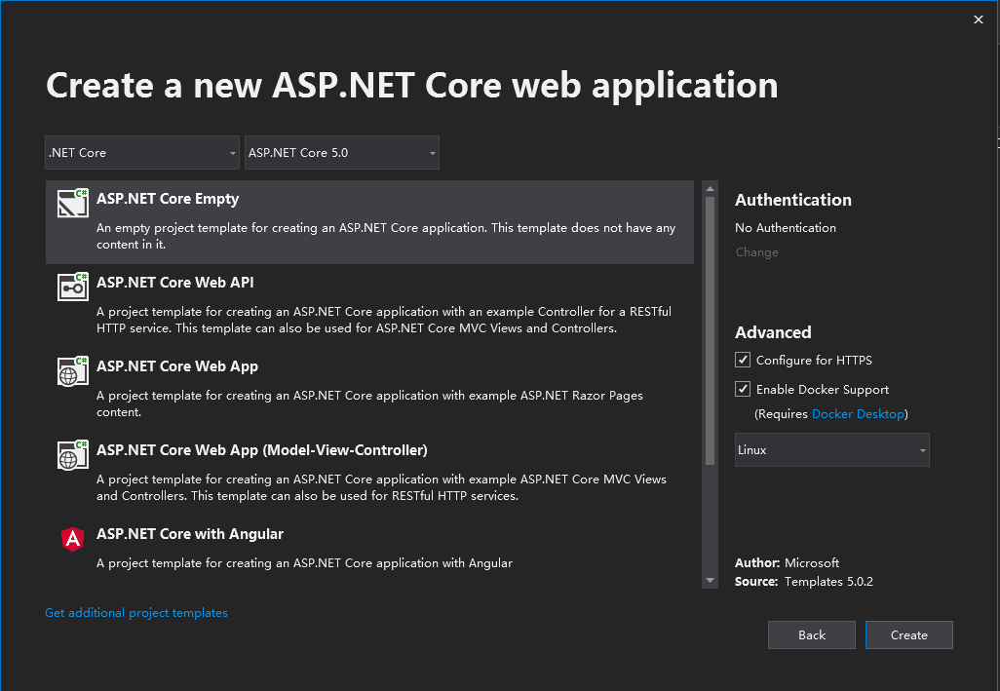

在 Docker 中运行 Asp.Net Core 程序
得益于 asp.net core 支持在 docker 中运行，asp.net core 可以更优雅的支持 DevOps，比如可以运行在各云服务商的容器服务内，如阿里云的“容器服务”和腾讯云的“云托管”等，让 C#后端开发也可以抛弃服务器了。
创建 asp.net core 程序
- 使用 vs2019
使用 vs2019 创建ASP.NET Core Web Application，勾选Enable Docker Support，平台选择 Linux

- 使用命令行
也可以使用命令行创建：
dotnet new webdotnet new mvcdotnet new webapp- 等等
但需要另外创建 Dockerfile 文件
1 | FROM mcr.microsoft.com/dotnet/aspnet:5.0-buster-slim AS base |
其中 Test 为项目名称，将其改为你自己的。
创建镜像
在项目文件夹下执行
1 | docker build . -t <image-name> -f Dockerfile |
如果操作成功，在控制台执行 docker image ls 应该能看到创建的新镜像。
之后，与其他镜像操作无异。
创建容器
在控制台执行：
1 | docker create -p 80:80 --name <container-name> <image-name> |
- container-name: 自定义的容器名称
- image-name: 上一步创建的镜像名称
如果操作成功，在控制台执行 docker ps -a 能看到新创建的容器，并且 STATUS = Created
运行容器
在控制台执行：
1 | docker start <container-name> |
如果操作成功，在控制台执行 docker ps -a 能看到新创建的容器，并且 STATUS 为启动时间
也可以执行以下语句启动所有容器：
1 | docker start $(docker ps -aq) |
docker ps 命令中， -a 为列出所有容器，-q 只显示 CONTAINER ID，合在一起可以对所有容器做操作。
DevOps
配合 GitHub 或 Gitee 等，可以让代码一经上传，就自动测试、打包、发布等。
- 新写个 webapi 项目并发布至服务器，包含一个接收 POST 请求的 API，能够执行脚本命令
- 在 GitHub 或 Gitee 等代码托管，设置项目的
WebHooks，URL 为上一步的 API 访问地址
脚本命令如下：
1 | git clone <repos-clone-url> |
- repos-clone-url 仓库克隆地址
- repos-name 仓库名称
- container-name 容器名称
- image-name 镜像名称
DevOps 示例
https://github.com/hal-wang/DevOps
发布这个项目到你的服务器，按 README.md 配置好系统用户变量，设置 WebHooks，就可以实现更新代码自动发布项目。